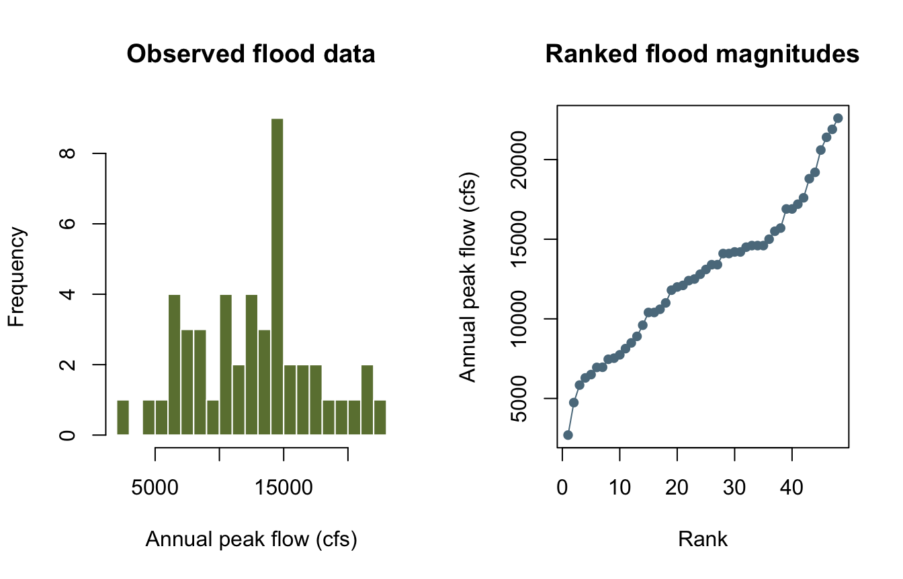
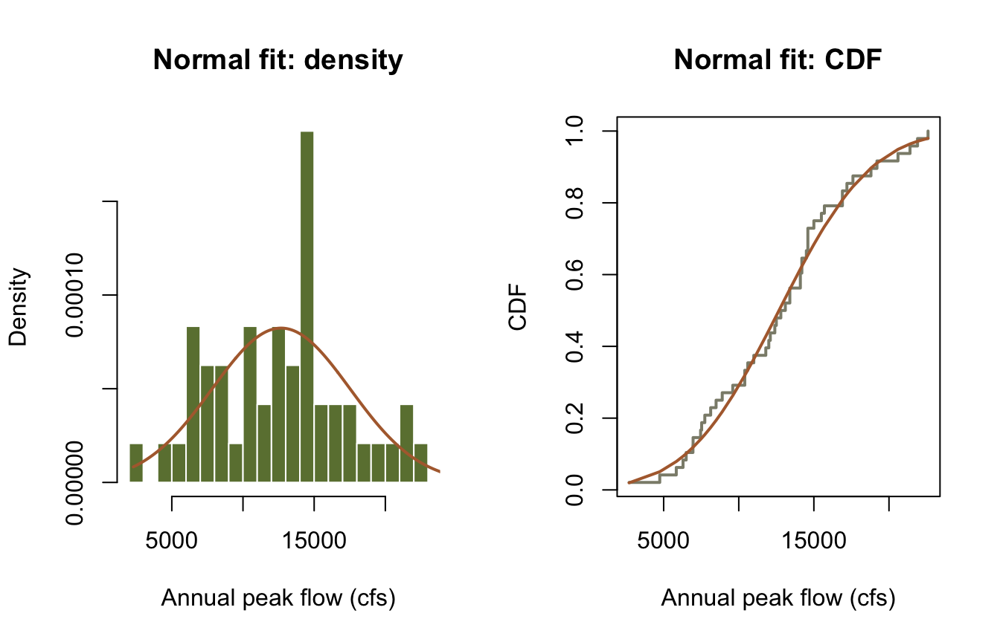
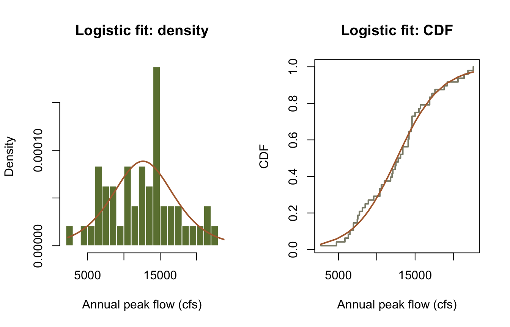
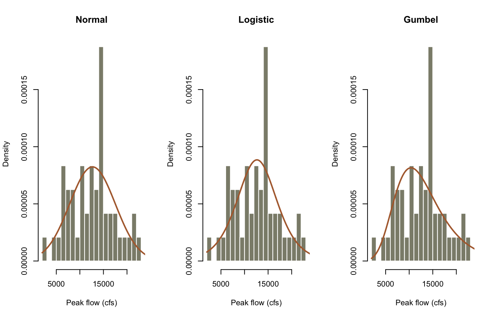
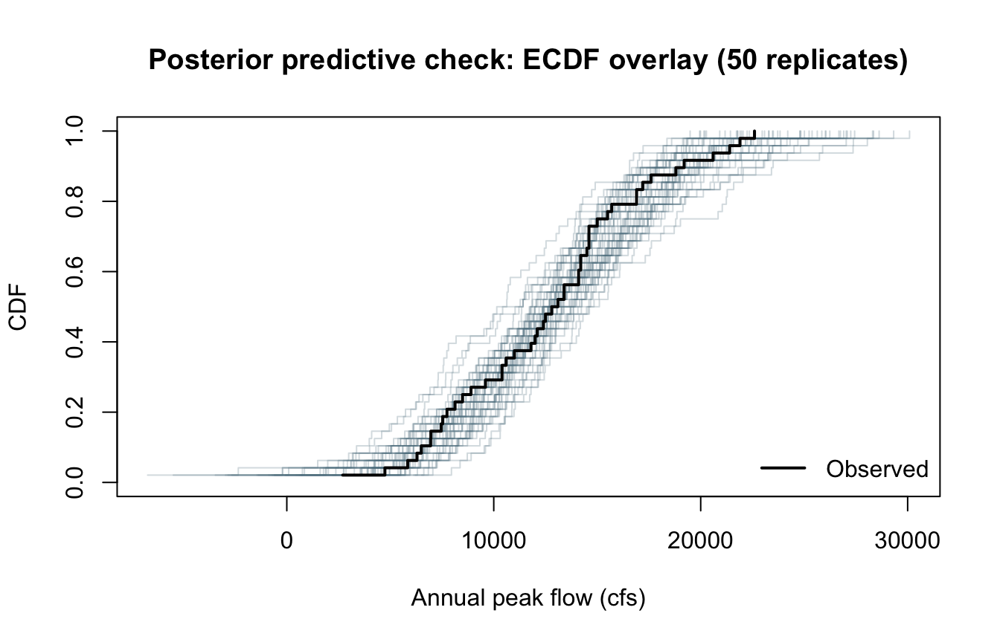
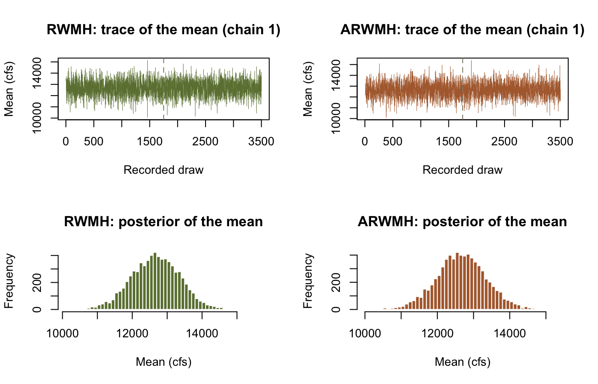

library(corehydror)04. Bayesian inference with MCMC
Ported from 04_mcmc_bayesian_inference.ipynb in the USACE-RMC Numerics-Python-Examples repository (0BSD licensed). The upstream notebook drives the C# Numerics.dll through pythonnet; this version uses corehydror, whose compiled core is a validated C++ port of the same library, so the seeded MCMC results below reproduce the upstream outputs at every digit the upstream displays (see the reproduction check at the end for the honest fine print). The Python version of this example uses the same core and prints the same numbers.
What you’ll learn
- Bayesian estimation of distribution parameters from real flood data with the random walk Metropolis-Hastings (RWMH) sampler.
- How
mcmc_sample()packages the upstream recipe (constraint-based uniform priors, MAP initialization, serial chains, seed 12345) into one call. - Fitting and comparing several candidate distributions.
- Posterior predictive checks.
- Adaptive versus non-adaptive samplers.
Setup
The upstream setup loads the CoreCLR runtime, resolves Numerics.dll, imports the MCMC classes, and wraps every Python likelihood in a .NET delegate. It also warns that the C# sampler’s parallel chains contend for Python’s GIL, so every upstream example sets ParallelizeChains = False. None of that applies here: the ported chain driver always runs chains serially (exactly the upstream’s ParallelizeChains = False code path), so seeded results are reproducible by construction.
Example: flood frequency analysis
Problem: we have annual peak flow data and want to estimate distribution parameters with uncertainty, using Bayesian inference through an MCMC sampler.
Data source: Tippecanoe River near Delphi, Indiana (from “Flood Frequency Analysis”, A.R. Rao and K.H. Hamed, CRC Press, 2000). The record has 48 annual peaks.
flood = c(6290, 2700, 13100, 16900, 14600, 9600, 7740, 8490, 8130, 12000,
17200, 15000, 12400, 6960, 6500, 5840, 10400, 18800, 21400, 22600,
14200, 11000, 12800, 15700, 4740, 6950, 11800, 12100, 20600, 14600,
14600, 8900, 10600, 14200, 14100, 14100, 12500, 7530, 13400, 17600,
13400, 19200, 16900, 15500, 14500, 21900, 10400, 7460)
summary_df = data.frame(
Metric = c("Count", "Sample mean (cfs)", "Sample std (cfs)", "Min (cfs)", "Max (cfs)"),
Value = round(c(length(flood), mean(flood), sd(flood), min(flood), max(flood)), 2)
)
cat("Flood dataset summary\n")Flood dataset summaryprint(summary_df) Metric Value
1 Count 48.00
2 Sample mean (cfs) 12665.21
3 Sample std (cfs) 4709.74
4 Min (cfs) 2700.00
5 Max (cfs) 22600.00par(mfrow = c(1, 2))
hist(flood, breaks = 15, col = "#6b7f3f", border = "white",
xlab = "Annual peak flow (cfs)", main = "Observed flood data")
plot(seq_along(flood), sort(flood), type = "o", pch = 16, col = "#5b7a8c",
xlab = "Rank", ylab = "Annual peak flow (cfs)", main = "Ranked flood magnitudes")
par(mfrow = c(1, 1))Fit a Normal distribution
The upstream builds every piece by hand: it asks the distribution for its parameter constraints (GetParameterConstraints), turns them into uniform priors (for the Normal: mean ~ Uniform(-1000000, 1000000) and standard deviation ~ Uniform(0, 100000)), wraps a Python log-likelihood in a .NET delegate, and runs RWMH with MAP initialization and the default seed 12345.
mcmc_sample() is that exact recipe in one call: the same constraint-based uniform priors, the same MAP initialization, the same serial chain driver, and the same C# defaults (four chains, 3500 recorded draws per chain with a thinning interval of 20, the first 1750 treated as warm-up, plus 10000 dedicated posterior draws that feed the summary statistics).
fit_norm = mcmc_sample(flood, distribution = "Normal", sampler = "RWMH", seed = 12345)
posterior_table = function(fit) {
data.frame(
Parameter = fit$parameters,
`Posterior mean` = round(fit$posterior_mean, 2),
`Lower 90% CI` = round(fit$posterior_lower_ci, 2),
`Upper 90% CI` = round(fit$posterior_upper_ci, 2),
check.names = FALSE
)
}
cat("Normal distribution results\n")Normal distribution resultsprint(posterior_table(fit_norm)) Parameter Posterior mean Lower 90% CI Upper 90% CI
1 µ 12677.64 11522.23 13847.04
2 σ 4844.70 4073.12 5735.17These are the numbers in the upstream results table: posterior mean 12677.64 with 90 percent credible interval (11522.23, 13847.04) for the mean, and 4844.70 with (4073.12, 5735.17) for the standard deviation. Plot the fit at the posterior-mean parameters against the data, like the upstream does.
plot_fit = function(fit, family) {
d = distribution(family, fit$posterior_mean)
x = seq(min(flood) * 0.85, max(flood) * 1.10, length.out = 400)
par(mfrow = c(1, 2))
hist(flood, breaks = 15, freq = FALSE, col = "#6b7f3f", border = "white",
xlab = "Annual peak flow (cfs)", main = paste(family, "fit: density"))
lines(x, sapply(x, \(v) dist_pdf(d, v)), col = "#b06a3b", lwd = 2)
s = sort(flood)
ecdf_y = seq_along(s) / length(s)
plot(s, ecdf_y, type = "s", col = "#8c8c7a", lwd = 2,
xlab = "Annual peak flow (cfs)", ylab = "CDF",
main = paste(family, "fit: CDF"))
lines(s, sapply(s, \(v) dist_cdf(d, v)), col = "#b06a3b", lwd = 2)
par(mfrow = c(1, 1))
}
plot_fit(fit_norm, "Normal")
Fit a Logistic distribution
The Logistic distribution has heavier tails than the Normal [1]. The same one-liner fits it; only the family name changes.
fit_logi = mcmc_sample(flood, distribution = "Logistic", sampler = "RWMH", seed = 12345)
cat("Logistic distribution results\n")Logistic distribution resultsprint(posterior_table(fit_logi)) Parameter Posterior mean Lower 90% CI Upper 90% CI
1 ξ 12632.66 11438.17 13801.22
2 α 2825.51 2308.14 3440.53plot_fit(fit_logi, "Logistic")
Comparing multiple distribution fits
Add a Gumbel fit and compare the three candidates. The upstream compares the fits visually and tabulates the posterior means; we add a plug-in log-likelihood (evaluated at the posterior-mean parameters) and AIC to make the ranking explicit.
fit_gum = mcmc_sample(flood, distribution = "Gumbel", sampler = "RWMH", seed = 12345)
fits = list(Normal = fit_norm, Logistic = fit_logi, Gumbel = fit_gum)
par(mfrow = c(1, 3))
x = seq(2000, 25000, length.out = 400)
for (name in names(fits)) {
d = distribution(name, fits[[name]]$posterior_mean)
hist(flood, breaks = 15, freq = FALSE, col = "#8c8c7a", border = "white",
xlab = "Peak flow (cfs)", main = name)
lines(x, sapply(x, \(v) dist_pdf(d, v)), col = "#b06a3b", lwd = 2)
}
par(mfrow = c(1, 1))
comparison = do.call(rbind, lapply(names(fits), \(name) {
fit = fits[[name]]
ll = dist_log_likelihood(distribution(name, fit$posterior_mean), flood)
data.frame(
Distribution = name,
`Parameter 1` = sprintf("%s = %.0f", fit$parameters[1], fit$posterior_mean[1]),
`Parameter 2` = sprintf("%s = %.0f", fit$parameters[2], fit$posterior_mean[2]),
`Log-likelihood` = round(ll, 2),
AIC = round(2 * 2 - 2 * ll, 2),
check.names = FALSE
)
}))
cat("Model comparison\n")Model comparisonprint(comparison) Distribution Parameter 1 Parameter 2 Log-likelihood AIC
1 Normal µ = 12678 σ = 4845 -473.63 951.26
2 Logistic ξ = 12633 α = 2826 -474.61 953.23
3 Gumbel ξ = 10386 α = 4512 -475.53 955.06The posterior means match the upstream comparison table (Normal 12678 / 4845, Logistic 12633 / 2826, Gumbel 10386 / 4512). The Normal edges out the other two on log-likelihood for this record, and fit$map_fitness (the optimizer’s negative log-fitness at the posterior mode) gives the same ordering.
Posterior predictive checks
A key part of Bayesian modeling is checking whether the fitted model can reproduce the observed data. Posterior predictive checks draw parameter sets from the posterior and generate synthetic replicates from the model at those parameters [2]. The upstream picks its replicate indices with an unseeded NumPy generator, so its exact numbers are not reproducible; here every draw goes through the seeded core RNG, and the Python twin produces bit-identical replicates.
# The last 1000 recorded draws of chain 1 are the posterior sample we draw from.
chain1 = fit_norm$chains[[1]]
tail_rows = chain1[(nrow(chain1) - 999):nrow(chain1), ]
# One predictive value per posterior draw (for summary statistics).
pred = vapply(1:1000, \(i) {
dist_random(distribution("Normal", tail_rows[i, ]), 1, seed = 10000 + i - 1)
}, numeric(1))
# 50 replicated datasets of the same size as the record (for the ECDF overlay).
reps = lapply(1:50, \(i) {
dist_random(distribution("Normal", tail_rows[(i - 1) * 20 + 1, ]),
length(flood), seed = 20000 + i - 1)
})
plot(NULL, xlim = range(c(flood, unlist(reps))), ylim = c(0, 1),
xlab = "Annual peak flow (cfs)", ylab = "CDF",
main = "Posterior predictive check: ECDF overlay (50 replicates)")
for (r in reps) {
s = sort(r)
lines(s, seq_along(s) / length(s), type = "s",
col = adjustcolor("#5b7a8c", alpha.f = 0.25))
}
s = sort(flood)
lines(s, seq_along(s) / length(s), type = "s", col = "black", lwd = 2)
legend("bottomright", legend = "Observed", col = "black", lwd = 2, bty = "n")
ppc_summary = data.frame(
Statistic = c("Mean", "Std dev", "5th percentile", "95th percentile"),
Observed = round(c(mean(flood), sd(flood),
quantile(flood, 0.05), quantile(flood, 0.95)), 2),
`Posterior predictive` = round(c(mean(pred), sd(pred),
quantile(pred, 0.05), quantile(pred, 0.95)), 2),
check.names = FALSE, row.names = NULL
)
cat("Posterior predictive summary\n")Posterior predictive summaryprint(ppc_summary) Statistic Observed Posterior predictive
1 Mean 12665.21 12834.75
2 Std dev 4709.74 4743.75
3 5th percentile 5997.50 5357.46
4 95th percentile 21120.00 20272.62corehydror also ships a turnkey version. posterior_predictive_check() fits the model by MCMC (DEMCz by default), draws replicate datasets, and returns Bayesian p-values for five test statistics. Values near 0.5 mean the observed statistic sits in the middle of the predictive distribution; values near 0 or 1 flag misfit.
ppc = posterior_predictive_check(flood, "Normal", seed = 12345)
pvals = data.frame(
Statistic = c("Mean", "Std dev", "Skewness", "Minimum", "Maximum"),
`Bayesian p-value` = c(ppc$mean_p_value, ppc$sd_p_value, ppc$skewness_p_value,
ppc$min_p_value, ppc$max_p_value),
check.names = FALSE
)
print(pvals) Statistic Bayesian p-value
1 Mean 0.497
2 Std dev 0.495
3 Skewness 0.347
4 Minimum 0.448
5 Maximum 0.590cat("Misfit flagged:", if (ppc$has_misfit) "yes" else "no", "\n")Misfit flagged: no Linear regression with uncertainty
The upstream notebook also builds a Bayesian linear regression from a hand-written likelihood. mcmc_sample() fits named distribution families and does not take a custom likelihood, so that section is not expressible here. A dedicated Bayesian regression example is planned for this site and will cover the same ground.
Non-adaptive vs adaptive samplers
Adaptive MCMC learns the proposal covariance from the chain’s own history instead of relying on manual tuning [3]. The upstream demonstrates the idea with DEMCzs; here we use ARWMH, the adaptive variant of the same random walk sampler, which makes the comparison like for like. (DEMCz, DEMCzs, HMC, NUTS, and SNIS are also available through sampler =.)
fit_arwmh = mcmc_sample(flood, distribution = "Normal", sampler = "ARWMH", seed = 12345)
compare = data.frame(
Statistic = c("Posterior mean (location)", "Posterior sd (location)",
"Posterior mean (scale)", "Posterior sd (scale)",
"Mean acceptance rate"),
RWMH = round(c(fit_norm$posterior_mean[1], fit_norm$posterior_sd[1],
fit_norm$posterior_mean[2], fit_norm$posterior_sd[2],
mean(fit_norm$acceptance_rates)), 4),
ARWMH = round(c(fit_arwmh$posterior_mean[1], fit_arwmh$posterior_sd[1],
fit_arwmh$posterior_mean[2], fit_arwmh$posterior_sd[2],
mean(fit_arwmh$acceptance_rates)), 4)
)
cat("Sampler comparison\n")Sampler comparisonprint(compare) Statistic RWMH ARWMH
1 Posterior mean (location) 12677.6413 12672.0105
2 Posterior sd (location) 711.6112 694.3654
3 Posterior mean (scale) 4844.6977 4849.0245
4 Posterior sd (scale) 515.0695 520.7415
5 Mean acceptance rate 0.4358 0.3667par(mfrow = c(2, 2))
plot(fit_norm$chains[[1]][, 1], type = "l", lwd = 0.4, col = "#6b7f3f",
xlab = "Recorded draw", ylab = "Mean (cfs)", main = "RWMH: trace of the mean (chain 1)")
abline(v = 1750, col = "#8c8c7a", lty = 2)
plot(fit_arwmh$chains[[1]][, 1], type = "l", lwd = 0.4, col = "#b06a3b",
xlab = "Recorded draw", ylab = "Mean (cfs)", main = "ARWMH: trace of the mean (chain 1)")
abline(v = 1750, col = "#8c8c7a", lty = 2)
post_rwmh = unlist(lapply(fit_norm$chains, \(ch) ch[1751:nrow(ch), 1]))
hist(post_rwmh, breaks = 40, col = "#6b7f3f", border = "white",
xlab = "Mean (cfs)", main = "RWMH: posterior of the mean")
post_arwmh = unlist(lapply(fit_arwmh$chains, \(ch) ch[1751:nrow(ch), 1]))
hist(post_arwmh, breaks = 40, col = "#b06a3b", border = "white",
xlab = "Mean (cfs)", main = "ARWMH: posterior of the mean")
par(mfrow = c(1, 1))The dashed line marks the end of warm-up. Both samplers agree on the posterior. ARWMH settles at a lower acceptance rate (about 0.37 versus 0.44) because the adapted proposal takes larger, better-scaled steps; that is the intended behavior, not a defect.
Summary
In this example you:
- Applied Bayesian inference to real flood frequency data with
mcmc_sample(). - Fit Normal, Logistic, and Gumbel distributions by MCMC and compared the posterior parameter estimates.
- Ran posterior predictive checks, both by hand from the chains and with
posterior_predictive_check(). - Compared a non-adaptive sampler (RWMH) with its adaptive variant (ARWMH).
References
[1] N. L. Johnson, S. Kotz, and N. Balakrishnan, Continuous Univariate Distributions, vols. 1-2, 2nd ed. Wiley, 1994.
[2] A. Gelman, J. B. Carlin, H. S. Stern, D. B. Dunson, A. Vehtari, and D. B. Rubin, Bayesian Data Analysis, 3rd ed. CRC Press, 2013.
[3] C. J. F. ter Braak and J. A. Vrugt, “Differential evolution Markov chain with snooker updater and fewer chains,” Statistics and Computing, vol. 18, no. 4, pp. 435-446, 2008.
Reproduction check
This port uses the upstream’s exact settings: the same constraint-based uniform priors, RWMH with MAP initialization, serial chains, and the default seed 12345. The C# and C++ samplers replay the identical accept-reject stream; all four RWMH and ARWMH acceptance rates match a direct run of the C# library bit for bit. The draws themselves are not bit-identical: the MAP starting point comes from a differential evolution optimization whose optimum differs from the C# result by about 1e-11 relative (accumulated last-digit floating point drift), and that offset carries through every subsequent draw at about 1e-9 relative. Every digit the upstream notebook displays therefore reproduces, and the assertions below pin the values at that precision. The one place the upstream prints six decimals (its sampler-comparison table shows 12677.641313 for the posterior mean of the Normal mean parameter) this port gives 12677.641312, so we state the difference rather than assert a wrong number.
| Quantity | Upstream C# | This port | Status |
|---|---|---|---|
| Normal posterior mean (mean, sd) | 12677.64 / 4844.70 | same at 2 dp | exact at displayed precision |
| Normal 90% CI (mean) | (11522.23, 13847.04) | same at 2 dp | exact at displayed precision |
| Normal 90% CI (sd) | (4073.12, 5735.17) | same at 2 dp | exact at displayed precision |
| Logistic posterior mean (location, scale) | 12632.66 / 2825.51 | same at 2 dp | exact at displayed precision |
| Logistic 90% CI (location) | (11438.17, 13801.22) | same at 2 dp | exact at displayed precision |
| Logistic 90% CI (scale) | (2308.14, 3440.53) | same at 2 dp | exact at displayed precision |
| Comparison table means (3 families) | 12678/4845, 12633/2826, 10386/4512 | same at 0 dp | exact at displayed precision |
| RWMH / ARWMH acceptance rates | not printed upstream | match the C# library bit for bit | exact |
| First recorded Normal draw (chain 1) | not printed upstream | 13287.2303500459 | exact (cross-language) |
| First posterior predictive draw | recast (unseeded upstream) | 14255.412844410343 | exact (cross-language) |
| Built-in PPC p-values (mean, sd) | recast (unseeded upstream) | 0.497 / 0.495 | exact (cross-language) |
The chunk below fails the render if any value drifts. The cross-language rows assert the exact values the Python notebook asserts.
# Upstream: 04_mcmc_bayesian_inference.ipynb, cell 7 output (Normal results table, 2 dp)
stopifnot(
round(fit_norm$posterior_mean[1], 2) == 12677.64,
round(fit_norm$posterior_lower_ci[1], 2) == 11522.23,
round(fit_norm$posterior_upper_ci[1], 2) == 13847.04,
round(fit_norm$posterior_mean[2], 2) == 4844.70,
round(fit_norm$posterior_lower_ci[2], 2) == 4073.12,
round(fit_norm$posterior_upper_ci[2], 2) == 5735.17
)
# Upstream: cell 9 output (Logistic results table, 2 dp)
stopifnot(
round(fit_logi$posterior_mean[1], 2) == 12632.66,
round(fit_logi$posterior_lower_ci[1], 2) == 11438.17,
round(fit_logi$posterior_upper_ci[1], 2) == 13801.22,
round(fit_logi$posterior_mean[2], 2) == 2825.51,
round(fit_logi$posterior_lower_ci[2], 2) == 2308.14,
round(fit_logi$posterior_upper_ci[2], 2) == 3440.53
)
# Upstream: cell 11 output (model comparison table, 0 dp)
stopifnot(
round(fit_norm$posterior_mean[1]) == 12678,
round(fit_norm$posterior_mean[2]) == 4845,
round(fit_logi$posterior_mean[1]) == 12633,
round(fit_logi$posterior_mean[2]) == 2826,
round(fit_gum$posterior_mean[1]) == 10386,
round(fit_gum$posterior_mean[2]) == 4512
)
# Seeded cross-language identity: the Python notebook asserts the same values.
# The values are bit-exact across R, Python, and C#'s accept-reject stream; the
# comparisons carry a 1e-15 relative tolerance only because R's decimal parser
# can land one ulp away from the written literal.
stopifnot(
abs(fit_norm$chains[[1]][1, 1] / 13287.2303500459 - 1) < 1e-15,
abs(fit_norm$chains[[1]][1, 2] / 4176.928509438068 - 1) < 1e-15,
abs(fit_norm$map_fitness / 473.55840961774754 - 1) < 1e-15,
abs(fit_norm$acceptance_rates[1] / 0.4352416666666667 - 1) < 1e-15,
abs(fit_arwmh$acceptance_rates[1] / 0.35859166666666664 - 1) < 1e-15,
abs(pred[1] / 14255.412844410343 - 1) < 1e-15,
ppc$mean_p_value == 0.497,
ppc$sd_p_value == 0.495,
ppc$has_misfit == 0
)
cat("All reproduction checks passed.\n")All reproduction checks passed.